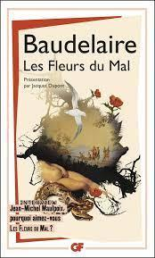

Les Fleurs du Mal - Baudelaire
1 - Mes notes au fur et à mesure de ma lecture
- Tout d'abord, le titre “ les fleurs du ma” est une oxymore composé du nom “fleurs” qui est représentatif de la beauté, de l’idéal et de tout ce qui est opposé à “mal” qui est au contraire péjoratif, et représentant la laideur, le spleen. Donc avant de lire ce recueil, je pensais trouver ici des poèmes opposant la beauté à la laideur, mais après la lecture de cet ouvrage, j’ai pu confirmer mes hypothèses mais aussi les compléter, car ce recueil ne fait pas qu’opposer le spleen et l’idéal, mais il transforme le spleen et idéal tel la transformation de la boue en or par un alchimiste, mais aussi le contraire, c’est à dire transformer l'idéal en spleen.
- Les Fleurs du Mal est composé de 6 sections, tous désignés par un nom bien choisi: “Spleen et Idéal”, “Fleurs du Mal”, “Révolte”, “Le vin”, “La Mort”, “Les tableaux parisiens”
- Le spleen désigne une mélancolie sans cause précise. D'après Baudelaire, le spleen est une mélancolie profonde née du mal de vivre.
- Je suis facilement entré dans la lecture, puisque c’est un recueil de poèmes, et qu’un poème est agréable et facile à lire.
- J’ai tout de suite aimé la fluidité de la lecture grâce à la versification mais certains poèmes m’ont déplu à cause du spleen et du vocabulaire péjoratif et du champ lexical de la mort trop présent.
- J’ai particulièrement aimé le poème “L’invitation au Voyage” car la beauté et l’idéal sont bien retranscrits au travers du voyage. Cependant le poème “Une charogne” m’a beaucoup moins plu car la connotation morbide m’a fortement choqué.
- Les thèmes abordés sont le vice, le voyage, la laideur et la beauté.
- Baudelaire, au travers de certains poèmes transforme la laideur en beauté et puis dans d’autres poèmes, il transforme la beauté en laideur.
2 - Mes citations
Citation | Thème | Interprétation |
Par toi je change l’or en fer et le paradis en enfer | alchimie inversée | Par le biais de la poésie, Baudelaire peut changer l’idéal en spleen. |
Le violon frémit comme un coeur qu'on afflige | Alchimie inversée | La nuit, baudelaire montre le spleen |
A travers la tempète, et la neige, et le givre, c’est la clareté vibrante à notre horizon noir; | La mort | C’est la mort qui nous attend, quelles que soient nos difficultés dans notre vie. |
Je suis comme un peintre qu’un dieu condamne à peindre, hélas ! Sur les ténèbres | Le désespoir | Baudelaire est maudit, il est condamné à écrire sur le mal contenu dans notre monde. |
“C'est la mort qui console, hélas ! et qui fait vivre.” | La mort | Nous vivons pour mourir mais c’est la peur de mourir qui nous anime |
“Nous avons dit souvent d'impérissables choses.” | Le désespoir | Le regret |
“C’est le Diable qui tient les fils qui nous remuent !” | La mort | C’est la peur de mourir qui nous fait vivre |
“Le ciel est triste et beau comme un grand reposoir.” | Calme | c’est le repos |
“Là, tout n’est qu’ordre et beauté, Luxe, calme et volupté.” | Calme | c’est le repos |
“Le vin rend l’oeil plus clair et l’oreille plus fine ! ” | Le Vin | Le vin aiguise les sens |
“La Terre est un gâteau plein de douceur.” | Calme | La terre est pleins de choses. |
“Cette beauté, sombre comme le fer, Est de celles que forge et polit l’Enfer.” | Le désespoir | Alchimie inversée |
“Garde tes songes ; Les sages n’en ont pas d’aussi beaux que les fous ! | Calme | Il ne faut pas proférer n’importe quelles mensonges |
“Le Poète est semblable au prince des nuées Qui hante la tempête et se rit de l’archer.” | Le désespoir | Alchimie Inversée |
4 - Cercles de lecture en classe
- En quoi peut-on dire que Baudelaire nous permet une compréhension
métaphysique du monde en traduisant son espoir d’un idéal ?
Dans son recueil intitulé" les fleurs du mal, dont le titre est oxymorique, annonçant donc la couleur, Baudelaire nous montre, il nous fait part de sa vision du monde qu’il considère comme une malédiction, nous savons également que les poètes serait en relation directe avec Dieu, c’est pour cela que dans le poème élévation, Baudelaire nous fait part de l’envie de son esprit à s’élever dans une dimension supérieure, car il souhaite purifier l’aspect péjoratif perçu sur terre. De plus, par cet ascension, il souhaite se consoler, il s’enferme dans un idéal imaginaire.
- Comment Baudelaire met-il en place un nouveau beau ?
Tout d’abord, Baudelaire fait évoluer son concept de la beauté. Il instaure un principe de beauté oxymorique. Nous pouvons le voir en premier lieu dans le titre du recueil “Les Fleurs du Mal” qui oppose la beauté des fleurs à la laideur du mal. Par exemple, le poème “Charogne” Baudelaire propose une beauté subjective qui nous paraît étrange, voire répugnante. Il associe aussi ces deux idées avec une opposition entre “l’étoile de ces yeux“ a un vocabulaire péjoratif “lubrique, infection…”. On peut aussi remarquer des oxymores et des antithèses comme “cadavre superbe”. Enfin Baudelaire évoque l’étrange dans "hymne à la beauté”. Il donne à la beauté un corps et une âme. Donc nous pouvons en conclure que Baudelaire a utilisé l’alchimie poétique, embellit le spleen ce qui définit sa perception du beau qu’il nous transmet.
- Quelle est la définition et l’importance du thème de la boue dans ce recueil ?
Pour commencer, la boue pour Baudelaire représente tout ce qui est négatif sur Terre comme le spleen; la vie sur Terre. La souffrance, le malheur, Ainsi la boue a une place primordiale dans “les Fleurs du Mal” car c’est une source d’inspiration poétique au même titre que la beauté et à la représentation d'un idéal. Or la transformation de la boue en or devient avec le temps une malédiction le ramenant donc au spleen. Il est obligé de créer de nouveau de l’or, créant ainsi un cercle vicieux. Cette omniprésence de la boue dans les Fleurs du Mal” peut être traduite par le fait qu’il soit un poète. Comme nous l’apprend le poème “Bénédiction”, être poète est une malédiction car il perçoit l(invisible, entend l’inaudible, il est rejeté par la société et ne trouve pas sa place sur Terre, comme “Albatros”. Enfin, cette omniprésence de la boue peut être également traduite par diverses formes physiques. Les figures féminines ont comme le métaphysique retrouvé son esprit qui s’envole pour trouver sa place dans les cieux et dans les profondeurs.
- En quoi le spleen est-il un sentiment causé par l’échec de l’alchimie poétique ?
Le spleen est une forme de mélancolie, de dépression, de mal-être aussi bien mental que physique. Dans le corpus étudié, le spleen est un sentiment que ressent le poète et s’oppose à l’idéal? Par conséquent, dans le poème 1 du corpus, le spleen est représenté par la perception négative de la ville dans laquelle, il se trouve ‘froid et tremblant”, dans le poème 2 du corpus; le manque de forme, c’est à dire la représentation amorphe du chaos qui règne dans l’esprit du poète mis en avant à travers un poème déstructuré, ce qui représente le spleen. Dans les deux derniers poèmes, Baudelaire se perd et se fait engloutir par le spleen. Nous le voyons car il utilise la première personne du singulier. On remarque la progression de ce qui a été auparavant évoqué. Le poète se meurt, en somme le spleen semble de prime abord être représenté par la boue ou soit en idéal devient une malédiction. Nous pouvons donc émettre l’hypothèse que ce n’est pas forcément la boue qui représente le spleen mais la transformation, de la boue en or. On peut donc ici comprendre que c’est un échec de l’alchimie poétique. Le fait que le spleen est constamment présent chez Baudelaire montre l’échec de l’alchimie poétique de ce sentiment du mal être.
- Comment l’écriture poétique permet-elle de s’éloigner de la boue et de la
transformer ?
La boue chez Baudelaire est une représentation du spleen c'est-à-dire toute forme de mélancolie, de dépression, de mal être aussi bien mentale que physique. De part son statut de poète, cette dernière est omniprésente chez Baudelaire car sa perception de la réalité dépasse celle des simples mortels? Au travers de ces textes, Baudelaire cherche à s'éloigner de la réalité. Grâce au pouvoir des mots, lui permettant de bâtir un monde idéologie de figures d'ailleurs afin d’éviter de se faire engloutir par le spleen et la boue. Dans sa quête de l’ailleurs, il cherche ses grandes figures essentiels: souvenir d’une femme avec “La Chevelure” ou encore l’assimilation que lui rapporte ces dernières avec un paysage paradisiaque. Après avoir pris ce recul vis à vis de la situation du monde dans lequel il vit, Baudelaire le transforme grâce à l’alchimie poétique en un idéal dans lequel il est en mesure de se réfugier. Par exemple dans le poème “La Géante”, il donne à un être perçu comme laid par l’homme le géant, une beauté que lui seul peut percevoir “ses magnifiques formes”...
Au final, grâce à l’écriture poétique Baudelaire sublime ce monde baveux en prenant de la hauteur et en se réfugiant dans un idéal.
5 - Travail d’analyse sur les couvertures
- Cette illustration est composée de roses, ce sont des fleurs magnifiques visuellement mais elles sentent aussi très bon. Mais il ne faut pas trop en approcher car elles ont des piques qui représentent le mal, elles sont donc très bien choisi pour cette couverture, il y a la représentation du voyage, d’une femme. Il y a aussi un oiseau que je peux deviner être un albatros représentant le rejet de Baudelaire par la société de son époque.

Découverte du monde de la Nuit
Après la lumière et la clarté,
Vient l’ombre et l’obscurité.
Les ombres s’élèvent et se querellent
Lors de l’apparition de milliers d'étincelles.
La monde connu sous la lueur du soleil
Se métamorphose en un monde en sommeil.
Une brume alors devenu invisible,
Par l’arrivée d’une noirceur imprévisible,
Tout comme l’apparition de lueurs silencieuses,
Ainsi que la puissante clarté de notre Lune,
Qui illuminent ta route chanceuse,
Pour admirer et déambuler sans infortune,
Au travers des paysages morts
Mais renaissants des étincelles d’or,
L’éclatante lueur de sapphire,
De la Lune qui dirige les navires.